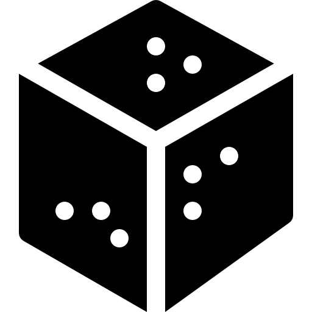

<nav class="navbar">
  <div class="navbar-logo">
    <a routerLink="/inicio">
      <span>Lucky Recipy</span>
      
    </a>
  </div>

  <app-search-bar class="navbar-search" (search)="onSearch($event)"></app-search-bar>

  <button
    class="menu-toggle"
    (click)="toggleMenu()"
    [class.open]="isMenuOpen"
    aria-label="Abrir/Cerrar menú"
  >
    <div class="hamburger"><span></span></div>
  </button>

  <ul class="navbar-links" [class.open]="isMenuOpen">
    <li><a routerLink="/inicio" (click)="closeMenu()">Inicio</a></li>
    <li><a routerLink="/categorias" (click)="closeMenu()">Categorías</a></li>
    <li><a routerLink="/restaurantes" (click)="closeMenu()">Restaurantes</a></li>
    <li><a routerLink="/eventos" (click)="closeMenu()">Eventos</a></li>

    <li *ngIf="!authService.isLoggedIn()">
      <a routerLink="/login" (click)="closeMenu()">Login</a>
    </li>
    <li *ngIf="!authService.isLoggedIn()">
      <a routerLink="/register" (click)="closeMenu()">Register</a>
    </li>
    <li *ngIf="authService.isLoggedIn()">
      <a routerLink="/crear-receta" (click)="closeMenu()">Crear receta</a>
    </li>

    <li *ngIf="authService.isLoggedIn()">
      <button (click)="logout()">Logout</button>
    </li>

    <!-- Barra de búsqueda para móvil (sidebar) -->
    <li class="mobile-search">
      <app-search-bar (search)="onSearch($event)"></app-search-bar>
    </li>
  </ul>

  <div class="overlay" *ngIf="isMenuOpen" (click)="closeMenu()"></div>
</nav>
